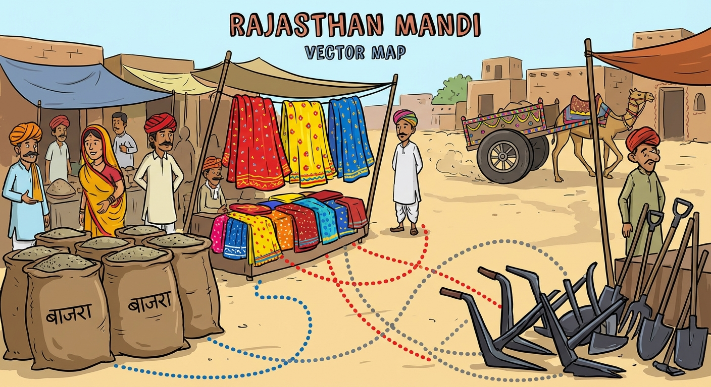
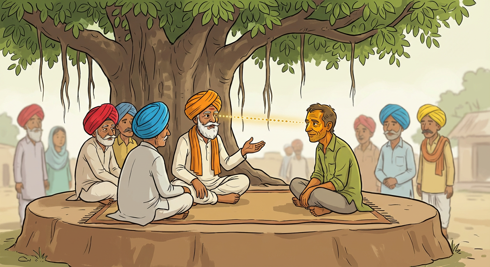
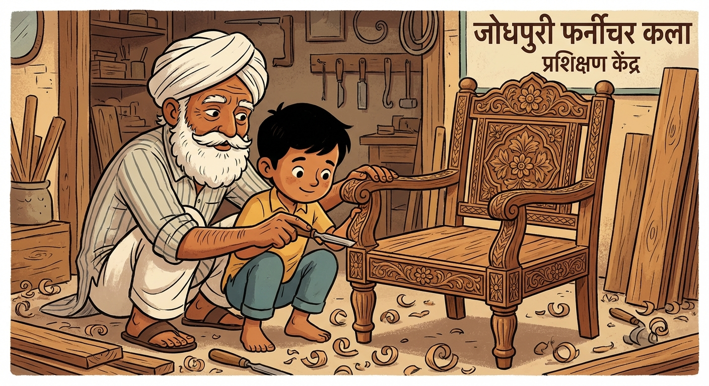
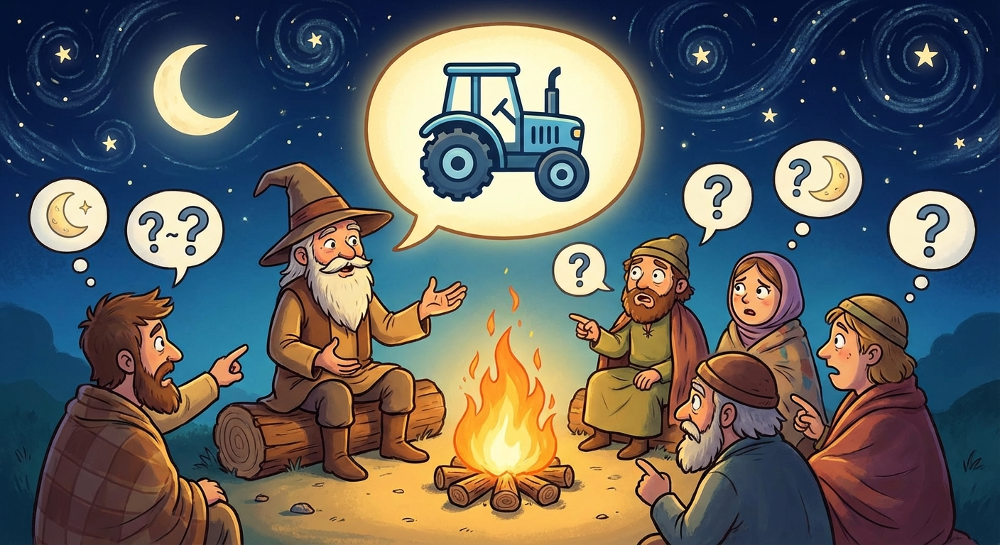
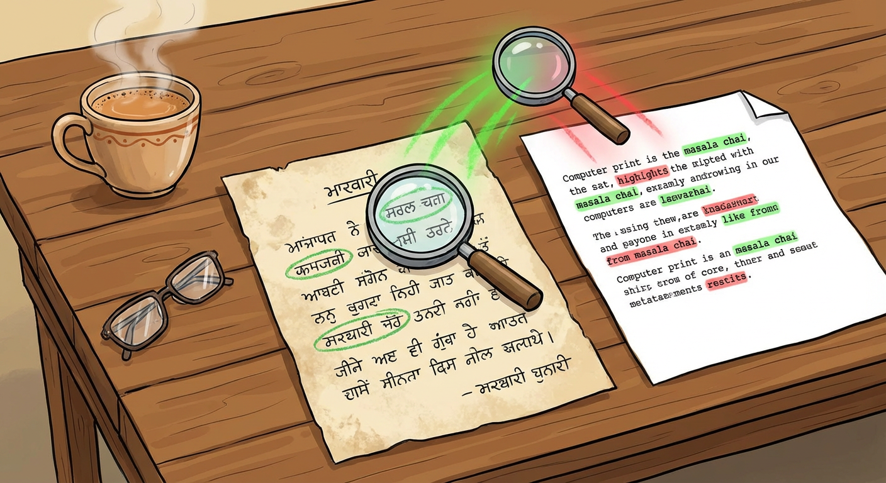

थाने लागतो होवेला के आर्टिफीसियल इंटेलिजेंस (Artificial Intelligence) तो बस बैंगलोर या सिलिकॉन वैली (Silicon Valley) रे काच रे दफ्तरों री ही बात है। थाने लागतो होवेला के क्यूंकि थे गाँव रे सरकारी स्कूल में पढ़ाई कीनी है, या क्यूंकि थे फर्राटेदार अंग्रेजी कोनी बोलो, तो आ तकनीक थारे वास्ते कोनी है।
हालांकि, थै लगभग सही हो। पण जे थनै सीखण री इच्छा है तो थै खुद रो एआई बणा सको हो। आपरे गाँव री समस्याओं — बुजुर्गां रो एकलापो, गिरतो पांणी रो स्तर, डॉक्टरां री कमी—ऐसी मुश्किलां हैं जिने कोई बड़े शहर रे इंजीनियर उ ज्यादा थे हारी (अच्छी) तरह समझो हो। आ पुस्तिका कोई इम्तिहान री किताब कोनी है। आ तो एक औज़ार रो मैनुअल (manual) है। ज्यूँ थे मोटरसाइकिल ठीक करणी या पांणी रो पंप ठीक करणो सीख्यो, उंयी थे आपरे भाई-बंधुओं री मदद करण वास्ते एआई (AI) टूल्स बणावणो सीख सको हो।
I. नींव: मशीनें कियां पढ़ें
एक ऐसी जुगत बणावण वास्ते जो आपरी भाषा बोले, आपने पेली आ समझणो पड़सी के एक कंप्यूटर—जो खाली नंबर (संख्या) समझे है—"बाजरो," "दुकाल (सूखा)," या "तबीयत" जेड़ा शब्दों ने कियां समझ सके है।
1.1 नक्शे रे रूप में शब्द (Vector Semantics)

गाँव री मंडी रो ध्यान करो। थाने ठा है के अनाज री दुकानों सगळी एक लाइन में है, कपड़ा री दुकानों दूसरी लाइन में, और औज़ारों री दुकानों तीसरी लाइन में। थाने ठा है के कसी चीज़ कठे है, आ देख ने के वो किणे कने है। अगर थे अनाज व्यापारी रे कने कोई नई दुकान खुलती देखो, तो थे मान लो के वो शायद खेती या खावण-पीवण री ही कोई चीज़ बेचतो होवेला।
कंप्यूटर शब्दों ने उणी तरह जमावे है। इने वेक्टर सिमेंटिक्स (Vector Semantics) केवे है।
कंप्यूटर हर शब्द ने नंबरों री एक लिस्ट में बदल देवे है, जिने आपां वेक्टर (Vector) केवां। वो इण वेक्टर्स ने एक मोटा गणितीय नक्शे माथे राखे है। एक ज्यूँ मतलब वाला शब्द इण नक्शे माथे एक-दूसरे रे नेड़े (पास) आ जावे है।
वर्ड2वेक (Word2Vec): आ एक तकनीक है जटे कंप्यूटर आ सीखे है के "राजा" रो संबंध "आदमी" उ वो ही है जो "राणी" रो "लुगाई" उ है, बस आ देख ने के लाखों वाक्यों में ऐ शब्द कितना नेड़े-नेड़े आवे है।
एम्बेडिंग्स (Embeddings): इण नक्शे माथे कोई शब्द रो जो ठिकणो है, वो उणरी "एम्बेडिंग" है। वो आपरे पास-पड़ोस रे हिसाब उ शब्द रो मतलब पकड़े है।
1.2 भविष्य री भविष्यवाणी (Language Models)
एक मशीन बोलणो कियां सीखे? वा अंदाज लगा ने सीखे है।
एक खेल रे बारे में सोचो जटे एक कहाणी सुणावण वालो वाक्य रे बीच में रुक जावे, और टाबरों ने आगे वालो शब्द जोर उ बोलणो पड़े। "गायो ने छलांग लगाई..." टाबर चिल्लावे "चाँद रे ऊपर!" क्यूंकि वे पैटर्न जाणे है।
बिलकुल इणी तरह एक लैंग्वेज मॉडल (Language Model) काम करे है। इने सेल्फ-सुपरवाइज्ड लर्निंग (Self-Supervised Learning) रो इस्तेमाल कर ने तैयार (प्रशिक्षित) करियो जावे है। आपां कंप्यूटर ने अरबों वाक्य देवां, पण आपां हर वाक्य रो आखिरी शब्द लुका देवां। कंप्यूटर लुके थके शब्द रो अंदाज लगावण री कोशिश करे है।
लॉस फंक्शन (Loss Function): अगर कंप्यूटर "चाँद" री जगह "ट्रैक्टर" रो अंदाज लगावे, तो आपां वने बतावां के वो गलत है। उणरे अंदाज और सही जवाब रे बीच रे फर्क ने "लॉस (Loss)" केवे है। कंप्यूटर अगली बार इण नुकसान (लॉस) ने कम करण वास्ते आपरे भीतर रे नंबरों ने ठीक करे है।
नेक्स्ट टोकन प्रेडिक्शन (Next Token Prediction): मॉडल पूरी बात कोनी सोचे; वो तो बस पेली जो देख चुक्यो है उणरे आधार माथे सब उ ज्यादा संभावित अगले शब्द (या "टोकन") री भविष्यवाणी करे है।
II. इंजन: ट्रांसफॉर्मर आर्किटेक्चर (Transformer Architecture)
लंबे टेम तक, कंप्यूटर लंबी कहाणियां समझण में कमजोर हा। आखिर तक पहुँचता-पहुँचता वे वाक्य री शुरुआत ने भूल जावता हा। पचे, 2017 में, ट्रांसफॉर्मर (Transformer) नाम रे एक नए डिज़ाइन ने सब कुछ बदल दियो।
2.1 पंचायत री चर्चा (Self-Attention)

गाँव री पंचायत में, जद सरपंच बोले, तो वे सगळा री बातों ने एक ज्यूँ महत्व कोनी देवे। अगर चर्चा पांणी रे बारे में है, तो वे किसान और पांणी रे जानकार माथे घणो ध्यान देवे, पण वे उण टेम वास्ते मास्टर जी ने अनदेखा कर सके है। अगर बात पढ़ाई-लिखाई माथे आ जावे, तो वे आपरो ध्यान मास्टर जी कानी कर लेवे है।
इने सेल्फ-अटेंशन मैकेनिज्म (Self-Attention Mechanism) केवे है।
जद ट्रांसफॉर्मर (Transformer) कोई वाक्य पढ़े, तो वो एक ही टेम में हर शब्द ने देखे है। हर शब्द रे वास्ते, वो हिसाब लगावे है के मतलब समझण वास्ते उने वाक्य रे हर दूसरे शब्द माथे कितनो "ध्यान (attention)" देणो चाइजे।
क्वेरी, की, और वैल्यू (Query, Key, and Value): इण ध्यान (attention) रो हिसाब लगावण वास्ते, मॉडल हर शब्द ने तीन काम सौंपे है:
क्वेरी (Query): मैं काई ढूँढ रियो हूँ? (उदाहरण रे वास्ते, "मैं एक काम (क्रिया) हूँ जो आपरे कर्ता ने ढूँढ रियो है")
की (Key): मारे कने काई है जो मैं दे सकूँ? (उदाहरण रे वास्ते, "मैं एक संज्ञा हूँ")
वैल्यू (Value): मारे कने साची जाणकारी काई है?
क्वेरीज़ (Queries) ने कीज़ (Keys) उ मिला ने, मॉडल समझे है के वाक्य "छोरे ने गेंद ने लात मारी क्यूंकि आ गोल ही" में, शब्द "आ" "गेंद" ने बतावे है, "छोरे" ने कोनी।
2.2 समझ री परतां (Deep Neural Networks)
आ प्रक्रिया खाली एक बार कोनी होवे। आ परतों (layers) में होवे, ज्यूँ कोई मुश्किल फैसला लेवण री सीढियाँ होवे।
फीड-फॉरवर्ड नेटवर्क (Feed-Forward Networks): जाणकारी बनावटी "न्यूरॉन्स" री घणी परतों उ हो ने निकले है।
डीप लर्निंग (Deep Learning): पेली कुछ परतां आसान व्याकरण ने समझ सके है (काम करण वालो कठे है?)। बीच री परतां मतलब समझे है (काई ओ वाक्य गुस्सा वालो है या राजी होवण वालो?)। आखिरी परतां मुश्किल रिश्तों ने समझे है (काई ओ बीमारी रो इलाज है या कोई मजाक?)।
III. चेले ने तैयार करणो (Training the Apprentice)
एक होशियार एआई (AI) मॉडल बणावणो तीन चरणों में होवे, बिलकुल उणी तरह ज्यूँ कोई कारीगर ने काम सिखावणो।
3.1 सामान्य पढ़ाई (Pre-training)
इण उ पेली के कोई जवान खाती या डॉक्टर बणे, उने सामान्य भाषा, गणित और हिसाब-किताब सीखण वास्ते स्कूल जाणो पड़े। वे हर चीज़ रे बारे में थोड़ा-थोड़ा सीखे, पण वे अबार तक पूरा जानकार (विशेषज्ञ) कोनी है।
प्री-ट्रेनिंग (Pre-training): आपां मॉडल ने घणे सारे लिखे थके मसाला—विकिपीडिया, किताबें, समाचार और वेबसाइटों माथे तैयार करां।
मास्क्ड लैंग्वेज मॉडलिंग (Masked Language Modeling): मॉडल लाखों बार वाक्यों में खाली जगह भरण रो अभ्यास करे है। वो भाषा री बनावट और दुनिया रे बारे में मोटी-मोटी बातें सीखे है, पण वो अबार तक एक मददगार साथी बणनो कोनी जाणे।
3.2 काम सीखणो (Fine-Tuning)

अब, टाबर स्कूल छोड़ देवे और एक खास काम सीखण वास्ते एक कारखाने (वर्कशॉप) में लाग जावे। वे कविता पढ़णी छोड़ देवे और मशीन री किताबें (मैनुअल) पढ़णी शुरू कर देवे।
फाइन-ट्यूनिंग (Fine-Tuning): आपां पेली उ तैयार मॉडल ने लेवां और इने एक खास, छोटे डेटासेट माथे और सिखावां। अगर आपां गाँव वास्ते एक स्वास्थ्य सहायक बणावणो चावां, तो आपां इने डॉक्टरी री किताबों और मारवाड़ी में स्वास्थ्य री बातों माथे तैयार करां।
सुपरवाइज्ड लर्निंग (Supervised Learning): इण टेम, आपां मॉडल ने खास सवाल और सही जवाब देवां, उने पक्को पक्को सिखावां के कियां काम करणो है।
3.3 देख-परख उ सीखणो (RLHF)
आखिर में, उस्ताद कारीगर चेले ने काम करता देखे। अगर चेलो औज़ार ने सही ढंग उ पकड़े, तो उस्ताद राजी होवे। अगर वो गलती करे, तो उस्ताद उने सही करे।
रीइन्फोर्समेंट लर्निंग फ्रॉम ह्यूमन फीडबैक (Reinforcement Learning from Human Feedback - RLHF): मिनख एआई (AI) रे सागे बात करे और उणरे जवाबों ने नंबर देवे। अगर एआई (AI) कोई बदतमीजी वालो या खतरनाक जवाब देवे, तो मिनख उने कम नंबर ("दंड" या penalty) देवे। अगर वो एक काम रो और सही जवाब देवे, तो उने ज्यादा नंबर ("इनाम" या reward) मिले।
रिवॉर्ड मॉडल (Reward Model): एआई (AI) ओ अंदाज लगावणो सीखे के मिनखां ने कैसा जवाब पसंद आवे और आपरो "इनाम" बढ़ावण वास्ते आपरे व्यवहार ने बदलो।
IV. परख (Evaluation Metrics)
आपां कियां जाणां के आपरो औज़ार काम कर रियो है? आपां खाली मशीन माथे भरोसा कोनी कर सका। आपने इणरी पूरी जाँच करणी पड़सी।
4.1 अचंभा री जाँच (Perplexity)

एक कहानीकार री कल्पना करो जिणरो अंदाज लगावणो आसान है। थाने हमेशा ठा रेवे के वो आगे काई केवण वालो है। इणरो मतलब है के थे उणरी शैली ने पूरी तरह समझो हो।
परप्लेक्सिटी (Perplexity): ओ एक गणित रो स्कोर है जो नापे है के असली मिनख री भाषा उ मॉडल ने कितनो "अचंभा" (surprised) होवे है।
लो परप्लेक्सिटी (Low Perplexity): अगर मॉडल कोई जाँच वाले कागज में अगले शब्द रो सही अंदाज लगा सके, तो उणरी परप्लेक्सिटी कम है। इणरो मतलब है के वो भाषा ने हारी (अच्छी) तरह समझे है।
4.2 अनुवाद री तुलना (BLEU & ROUGE)

अगर आपां अंग्रेजी उ मारवाड़ी में स्वास्थ्य री सलाह रो अनुवाद करण वास्ते एक एआई (AI) बणावां, तो आपने इणरी सही-गलत री जाँच करणी पड़सी। आपां एआई (AI) रे अनुवाद री तुलना एक मिनख जानकार रे किए थके अनुवाद उ करां।
BLEU (Precision): ओ नाप गिणे है के एआई (AI) रे अनुवाद में कितना शब्द मिनख रे अनुवाद में भी आवे है। ओ देखे है के काई एआई (AI) ने सही शब्द मिल्या।
ROUGE (Recall): ओ नाप देखे है के काई एआई (AI) ने मिनख रे अनुवाद उ सगळा जरूरी शब्दों ने शामिल किया है। काई वो कुछ भूल गियो?
4.3 मिनख रो फैसला (Human-in-the-Loop)
कंप्यूटर गलतियाँ गिण सके, पण वे "आदर" या "भरोसे" रो न्याय कोनी कर सके। एक अनुवाद गणित रे हिसाब उ सही हो सके पण समाज रे हिसाब उ खराब हो सके।
ह्यूमन इवैल्यूएशन (Human Evaluation): ओ सब उ जरूरी इम्तिहान है। आपां एआई (AI) रे जवाब असली लोगां—गाँव रे बुजुर्गों, डॉक्टरां या मास्टरां—ने देवां और उणा उ पूच्छां:
काई ओ साच है? (ग्राउंडेडनेस / Groundedness)
काई ओ काम रो है? (यूटिलिटी / Utility)
काई ओ आदर मान वालो है? (हार्मफुलनेस / Harmfulness)
जद औज़ार इण मिनख री परीक्षा ने पास कर लेवे, जदी वो आपरे गाँव में काम लेवण वास्ते तैयार होवे।